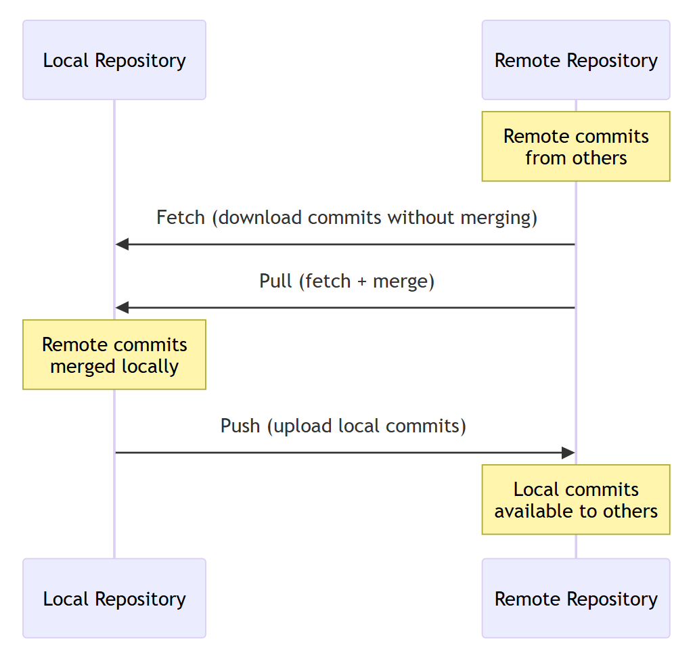

Practical 2: Version Control and Collaborative Coding
BIO511 Genomics - Introduction to Git and github
Introduction
As we refine our skills in command-line operations and text manipulation, it becomes increasingly important to manage our codebase in such a way that changes are tracked, collaboration is facilitated, and the history of the project is preserved. This practical will introduce you to version control using Git and collaborative coding practices with GitHub, which are essential for maintaining reproducible and organized computational workflows.
A few core concepts are:
- Repository (repo): a project folder that Git watches (contains a hidden
.git/directory). - Working tree: your actual files on disk.
- Staging area (index): a waiting room where you queue the exact changes for your next snapshot.
- Commit: a permanent snapshot with a message (what/why).
- Branch: a label that moves forward as you commit, representing a line of work (e.g.,
main,feature/x). .gitignore: patterns telling Git which files/folders not to track (e.g.,results/).
By the end of this practical you should be able to:
- Use some basic git commands like
git init,git add,git commit,git status, andgit push - Understand the concept of branches and how to create and switch between them using
git switch - Collaborate with others using GitHub by branching, creating pull requests from your branches, and merging code
Baby steps: Managing a local git Repository
This part is done locally, no need for github yet. However, here are some config changes you might want to make before starting:
# Adds your name and email to the global git configuration, good habit for labelling your commits
# This might also already be set if you've configured git before
git config --global user.name "Your Name"
git config --global user.email "your.email@example.com"
# Set the default branch name for new repositories to "main" (because "master" sounds weird)
git config --global init.defaultBranch mainInitializing a Local Git Repository
To initialize a local git repository, first make a new directory for your project and navigate into it:
mkdir my_project
cd my_projectThen, initialize the git repository with the following command:
git initThis command will create a new subdirectory named .git that contains all of your necessary repository files for a local git repository skeleton. At this point, nothing in your project is tracked yet.
You can then start adding (using git add) files to your repository and commit changes as you go, checking changes with git status and git log:
touch testdata.txt analysis.sh
git add testdata.txt analysis.sh
# Check that the change is staged
git status
# Commit the staged changes
git commit -m "Initial commit"
# View the commit history
git logCreate two files, name one of them testdata.txt and the other one analysis.sh. Then, run git status and look at the output.
Then, create a .gitignore file and add testdata.txt to it. After that, run git status again to see the effect of the .gitignore file:
echo "testdata.txt" >> .gitignore
git status
# Commit after updating the .gitignore file
git commit -m "Update .gitignore"Key Question: What is happening? In what scenario would you want to use a .gitignore file?
Managing new Development with Branches
When working on new features or bug fixes, it’s a good practice to create a new branch. This allows you to work independently of the main branch (main or master) and merge your changes only when they are ready (Avoiding conflicts and keeping the main branch stable). Branches can be made and handled with both the git switch and git checkout commands, however switch is a bit more intuitive for branch use.
# We use the `git switch -c` command to create and switch to a new branch in one step
git switch -c feature/newtextfile
# Look at the new status message to see that branching worked
git status
# Work on your changes, then add and commit them
touch newtextfile.txt
git add newtextfile.txt
echo "This is a new text file" > newtextfile.txt
git commit -m "Work on new feature"
# Switch back to the main branch
git switch main
# Merge the feature branch into the main branch
git merge feature/newtextfileConflicts happen when two branches change the same line of a file without a clear timeline of which change should take precedence, and Git can’t decide which version to keep for you.
1. Branch a new feature from main
git switch main
touch divtextfile.txt
echo "line one" > divtextfile.txt
git add divtextfile.txt
git commit -m "Add divtextfile on main"2. Make a conflicting change on the feature branch
git switch -c feature/divtextfile
echo "edited on feature branch" > divtextfile.txt
git add divtextfile.txt
git commit -m "Edit divtextfile on feature branch"3. Make another edit on the main branch before merging
git switch main
echo "edited on main, take 2" > divtextfile.txt
git add divtextfile.txt
git commit -m "Edit divtextfile on main again"4. Merge the feature branch into main and resolve the conflict
# From main
git merge feature/divtextfileA conflict occurred, resolved and commit the changes to complete the merge.
# The conflict markers will appear in the file
<<<<<<< HEAD
edited on main, take 2
=======
edited on feature branch
>>>>>>> feature/divtextfile
# Resolve the conflict by editing the file to keep the desired changes, then add and commit the resolved file
git add divtextfile.txt
git commit -m "Resolve merge conflict in divtextfile.txt"Remote repositories and Collaborative Coding via GitHub
GitHub is one of many platforms for hosting remote git repositories, allowing you to share your code with others, as well as access it from other computers you may be using. Remote repositories allow us to fetch updates/commits from others, alternatively pull them and merge them into our local repository. We then make our own edits, commit them and once ready we can push them to the remote repository for merging with the changes made by others.

While there are many ways to interact with remote repositories using the terminal, VS Code provides a more integrated and user-friendly approach through the “GitHub Remote Repositories” extension. For the sake of this practical, we will focus on using VS Code to manage remote repositories. However, you are encouraged to familiarise yourself with other methods as well.
On Github
- Go to GitHub and create an account if you don’t already have one.
- Make an empty repository on GitHub.
In VS Code
- Go to the extensions tab and search for the “GitHub Remote Repositories” extension, then install it.
- In Remote Explorer, if on “Remotes” swap to “Remote Repositories”
- Click on the
+icon to add a new remote repository. - Search for the repository you made on GitHub.
- Select the repository to connect to it
Using the terminal
- Make a directory with the same name as your GitHub repository.
- Initialize a git repository in it if you haven’t already:
git init - Add the remote repository:
git remote add origin <repository-URL> - Verify the remote repository has been added:
git remote -v
The terminal might need a separate authentication via Github CLI, this is most easily accomplished following the instructions here. Then once that has been installed, run:
gh auth loginIt should redirect to a web page where you can complete the authentication process.
Fetching/Pulling and Pushing Changes
Interaction with remote repositiores involves fetching changes from the remote repository, pulling updates to your local repository, and pushing your local changes to the remote repository.
- Fetching:
git fetchdownloads changes from the remote repository without integrating them into your local branch. - Pulling:
git pulldownloads changes from the remote repository and integrates them into your local branch. - Pushing:
git pushuploads your local changes to the remote repository, making them available for integration for others to use.
Your repository that you made on GitHub might have already have an initial commit (usually a README file). Lets fetch the changes from the remote repository to ensure your local repository is up-to-date:
git pull origin mainReplace main with the name of your default branch if it is different.
Using Branches and Pull Requests on Github
When collaborating on GitHub, it is common to use branches and pull requests to manage changes. You are now familiar with branches, but pushing them to the remote repository is the next step where our collaborators will be able to weigh in as well. Once your changes are ready, you can create a pull request to propose merging your branch into the main branch. This allows for code review and discussion before the changes are integrated.
Create a new branch and make some changes before commiting and pushing it:
git switch -c feature/readme-update
echo "Adding a note about collaboration." >> README.md
git add README.md && git commit -m "Add collaboration note to README"
git push -u origin feature/readme-updateGoing onto GitHub, navigate to your repository. You should see a prompt to create a pull request for your recently pushed branch. Click on “Compare & pull request”, provide a meaningful description of your changes, and submit the pull request for review. Review the changes and merge the pull request once youve had a look-through.
Why might a team prefer merging changes through a Pull Request on GitHub instead of merging branches locally and pushing directly to main?
Communicating code as codebases grow: A little on Docstrings
As your codebase grows, it becomes increasingly important to communicate the purpose and usage of your code to others (and to your future self). One effective way to do this in many programming languages is through the use of docstrings. Docstrings are special strings placed at the beginning of a script, module, class, or function that describe its purpose and usage. It is primarily a Python convention, but the practice is applicable in other languages.
Here is an example in Python:
def add(a, b):
"""
Adds two numbers together.
Parameters:
a (int or float): The first number.
b (int or float): The second number.
Returns:
int or float: The sum of the two numbers.
"""
return a + bBut the use is not limited to Python; many other languages have similar conventions for documenting code, though the syntax and placement may vary. The key idea is to provide clear, concise explanations of what your code does, what inputs it expects, and what outputs it produces, making it easier for others (and yourself) to understand and use your code effectively. Placed at the top of a script or function, these comments serve as immediate documentation for anyone reading the code.
An example in bash, for an iterative subscript annotating VCF files using snpEff, could thus be:
#################################################################################
# Run snpEff annotation on per-strain VCF files using GNU parallel. Provides
# parallel processing of VCF files for efficiency
#
# Usage: bash run_snpeff.sh <output_dir> <num_jobs> <input_dir>
#
# Expects:
# <input_dir>/<strain>.vcf — VCF files
# <input_dir>/snpeff_dbs/snpeff.config — database config
#
#
# Produces:
# <output_dir>/variants/<strain>.ann.vcf — annotated VCF
#################################################################################Here are a few mock scripts, try to write some brief docstrings for them that summarize their purpose, inputs, and outputs.
#!/bin/bash
GFF_DIR="/path/to/gff_files"
for gff_file in "${GFF_DIR}"/*.gff; do
cds_count=$(awk -F'\t' '$3=="CDS"' "$gff_file" | wc -l)
echo "$gff_file has $cds_count CDS features"
done#!/bin/bash
READS_DIR="/path/to/reads"
OUT_DIR="/path/to/qc_reports"
THREADS=4
mkdir -p "$OUT_DIR"
for r1 in "${READS_DIR}"/*_R1.fastq.gz; do
r2="${r1/_R1/_R2}"
fastqc -t "$THREADS" -o "$OUT_DIR" "$r1" "$r2"
doneScript 1: Count CDS features in GFF files
###############################################################################
# Count CDS features in GFF files
#
# Purpose: Iterate over GFF files and count the number of CDS features in each file,
# printing them to the console for overview
#
# Inputs:
# - GFF_DIR: Directory containing GFF files
#
# Outputs:
# - Prints the number of CDS features for each GFF file
###############################################################################Script 2: Quality control for sequencing reads
###############################################################################
# Quality control for sequencing reads
#
# Purpose: Perform quality control on sequencing reads using FastQC, generating
# reports for each pair of reads
#
# Inputs:
# - READS_DIR: Directory containing sequencing reads (FASTQ files)
# - THREADS: Number of threads to use for FastQC
# - OUT_DIR: Directory to store FastQC reports
#
# Outputs:
# - QC reports for each pair of reads in the specified output directory
###############################################################################- Version control is essential for tracking changes, collaborating with others, and maintaining a history of your project.
- Writing clear and concise docstrings for your scripts improves readability and helps others understand the purpose, inputs, and outputs of your code.
- As projects grow in scope, versions control and documentation become increasingly important for maintaining order and ensuring reproducibility.